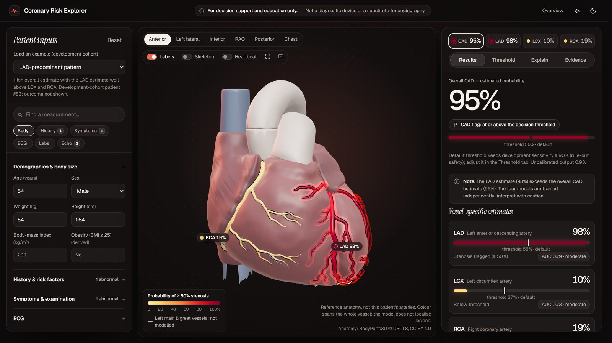
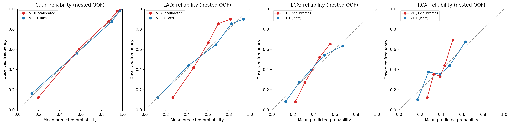
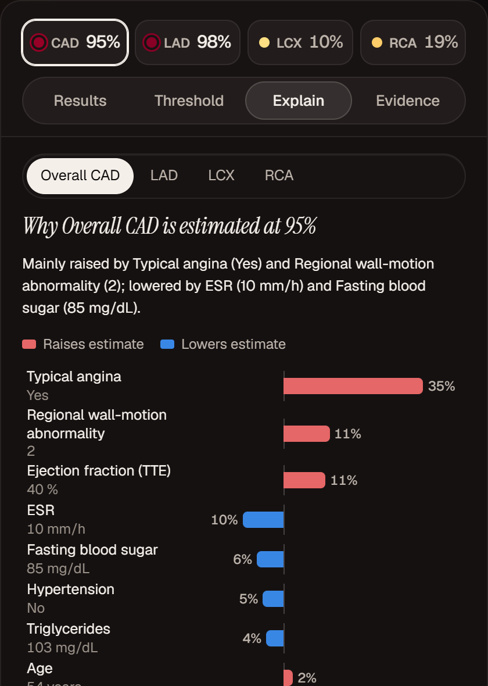
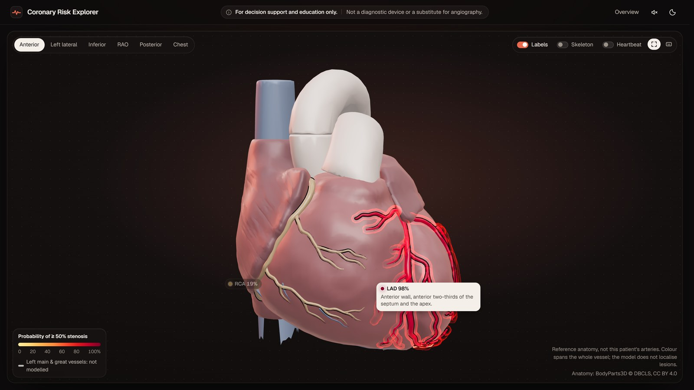
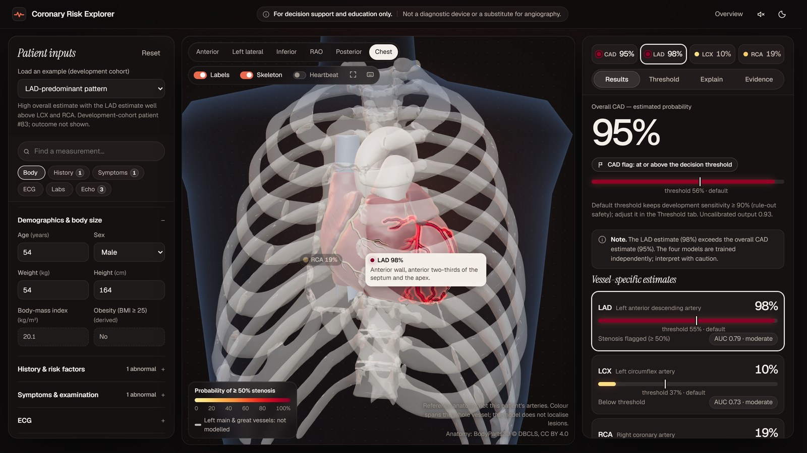

Coronary Risk Explorer predicts overall coronary artery disease (CAD, the dataset's Cath label) and ≥ 50% stenosis of the LAD, LCX and RCA from 54 routine variables of one clinic visit: demographics, history, symptoms and examination, ECG, laboratory tests and echocardiography. Each estimate is calibrated, explained with exact SHAP values, and painted onto the matching coronary artery of a real anatomical 3D heart that users can rotate, zoom and select. The whole system is one web application with a FastAPI model service; inputs re-score in about 60 ms, so the heart and the explanations update while the user types.

| Requirement | Implementation |
|---|---|
| 1 Predictive modelling | Four classifiers (Cath, LAD, LCX, RCA) on demographic, examination, ECG, laboratory and echo features; LAD/LCX/RCA/Cath are never inputs (schema rejects them); accuracy, precision, recall, F1, ROC-AUC, PR-AUC, Brier and MCC reported with 95% CIs (§3). |
| 2 3D visual mapping | Three.js/WebGL heart and thorax from BodyParts3D; each artery system recoloured live from its predicted probability; rotate, zoom, pan, camera presets, click/hover/keyboard selection with a focus mode (§4). |
| 3 Clinical dashboard | Overall CAD and vessel probabilities beside the canvas; SHAP breakdown per target; every measurement shown with its value, typical range and share of the attribution; decision-threshold explorer; model evidence (§4). |
| 4 3D models | Open-source BodyParts3D meshes (CC BY 4.0), converted to .glb by a reproducible script (§4). |
| 5 Safety disclaimer | Always-visible banner in the explorer, in the landing hero and footer; the canvas states it shows reference anatomy, not the patient. |
Dataset. UCI Extension of Z-Alizadeh Sani: 303 patients referred for angiography at one centre; 59 columns. Targets: Cath (CAD prevalence 71%), and stenosis of LAD, LCX and RCA (stenotic = 1, normal = 0).
Audit (Notebook 1). No missing values, no exact or conflicting duplicate patients, no physiologically implausible values. One constant column (Exertional CP, all "N") was dropped, leaving 54 input features. A typo in Sex ("Fmale") was corrected. Strong collinearity (Neut–Lymph r = −0.92) was kept, since tree models tolerate it. A leakage audit confirmed that only the four target columns carry outcome information.
Encoding (Notebook 2). Binary string fields → 0/1; BBB (N/LBBB/RBBB) one-hot; numeric fields passed through for trees and standardised for linear models and SVMs. Valvular heart disease (VHD) was tested two ways: Config A ordinal (N < mild < moderate < severe; 56 transformed features) and Config B one-hot (59 features); the choice was made per target on development CV.
Leakage control. Every transformer lives inside an sklearn Pipeline, so it is fitted only on the training part of each fold. BMI and obesity are derived from weight and height at prediction time, exactly as in the data.
Cath, seed 42). The holdout indices are written to preprocessing_config.json and the holdout stayed sealed until Notebook 6, where the frozen models were scored exactly once. No model, feature, hyperparameter or threshold decision used it.Logistic regression, linear and RBF SVMs, random forest, XGBoost and LightGBM were compared for every target under the same 25 folds and both encodings (Notebooks 3–4). The strongest candidates were tuned in nested CV (Notebook 5) and frozen:
| Target | Model | Encoding | Key hyperparameters | Dev nested-CV ROC-AUC |
|---|---|---|---|---|
| Cath | XGBoost | B one-hot | 300 trees, depth 4, learning rate 0.027, subsample 0.95 | 0.927 ± 0.046 |
| LAD | Random forest | A ordinal | 450 trees, depth 7, min leaf 2, balanced class weights | 0.856 ± 0.050 |
| LCX | Random forest | B one-hot | 200 trees, min leaf 4, max features log2 | 0.750 ± 0.058 |
| RCA | Random forest | B one-hot | 150 trees, depth 3, max features log2 | 0.703 ± 0.047 |
Tree ensembles were preferred over a slightly better-scoring average of many models because they support exact, real-time SHAP (§4). The served version v1.1 adds Platt calibration fitted on the development out-of-fold predictions and pre-declared operating thresholds: for Cath the highest threshold keeping development sensitivity ≥ 0.90 (rule-out safety), for the vessels Youden's J. Each pipeline's SHA-256 is checked against the release manifest when the service starts.
| Metric | Cath (overall CAD) | LAD | LCX | RCA |
|---|---|---|---|---|
| ROC-AUC | 0.854 [0.74–0.94] | 0.794 [0.67–0.90] | 0.730 [0.59–0.85] | 0.701 [0.56–0.83] |
| PR-AUC (AP) | 0.932 [0.88–0.98] | 0.827 [0.73–0.92] | 0.626 [0.51–0.81] | 0.513 [0.38–0.70] |
| Accuracy | 0.820 [0.74–0.90] | 0.738 [0.64–0.84] | 0.672 [0.57–0.77] | 0.672 [0.61–0.74] |
| Precision (PPV) | 0.820 [0.76–0.89] | 0.725 [0.64–0.83] | 0.750 [0.50–1.00] | 0.500 [0.00–1.00] |
| Recall (sensitivity) | 0.954 [0.88–1.00] | 0.853 [0.73–0.97] | 0.346 [0.19–0.54] | 0.100 [0.00–0.25] |
| Specificity | 0.500 [0.28–0.72] | 0.593 [0.41–0.78] | 0.914 [0.83–1.00] | 0.951 [0.88–1.00] |
| F1 | 0.882 [0.83–0.93] | 0.784 [0.70–0.87] | 0.474 [0.27–0.65] | 0.167 [0.00–0.39] |
| MCC | 0.538 [0.30–0.76] | 0.466 [0.26–0.68] | 0.324 [0.08–0.54] | 0.097 [−0.16–0.36] |
| Brier | 0.139 [0.09–0.19] | 0.185 [0.15–0.22] | 0.215 [0.19–0.24] | 0.206 [0.19–0.22] |
95% CIs: 2,000 stratified bootstrap resamples, a declared post-hoc description of the same one-time predictions. Positives/negatives: Cath 43/18, LAD 34/27, LCX 26/35, RCA 20/41.
Ranking quality (ROC-AUC) holds up from development to holdout, within the interval width for N = 61. At the naive 0.50 threshold LCX and RCA rarely flag, because their uncalibrated forests are over-cautious; this is what the v1.1 calibration and thresholds correct:
| Served v1.1 (development nested CV, 25 folds) | Cath | LAD | LCX | RCA |
|---|---|---|---|---|
| Operating threshold (calibrated probability) | 0.562 | 0.549 | 0.374 | 0.372 |
| Sensitivity / specificity | 0.904 / 0.739 | 0.818 / 0.731 | 0.701 / 0.643 | 0.698 / 0.592 |
| F1 · balanced accuracy | 0.900 · 0.822 | 0.816 · 0.775 | 0.617 · 0.672 | 0.597 · 0.645 |
| Calibration slope (ideal 1): v1 → v1.1 | 1.21 → 0.97 | 1.89 → 0.95 | 1.86 → 0.96 | 2.27 → 1.03 |
| Brier: v1 → v1.1 | 0.096 → 0.096 | 0.162 → 0.151 | 0.204 → 0.199 | 0.214 → 0.207 |

A development-only search of ~30 candidates (ensembles, stacking, MLP, TabPFN v2 transformer), paired on the same 25 folds with a corrected t-test, found at most +0.01–0.02 ROC-AUC, none of it statistically significant. With 242 development patients, data, not modelling, is the limit; the interpretable shipped models were kept.
shap.TreeExplainer on the served pipelines), aggregated from transformed columns back to the 54 clinical inputs.


tools/build_anatomy.py range-fetches only the ~7 MB of parts it needs from the official archive, crops, simplifies, groups by FMA concept and writes heart.glb (2.0 MB) and thorax.glb (2.5 MB, loaded only for the chest view).vessel_<TARGET>: LAD = anterior interventricular branch with diagonal and conus branches; LCX = circumflex branch; RCA = trunk, marginal and posterior interventricular branches. The left main and great vessels stay grey ("not modelled").Figure 6. Data flow. Every number in the UI comes from the API; nothing is hard-coded in the frontend.
| Endpoint | Returns |
|---|---|
POST /predict | Calibrated probabilities, threshold flags, consistency check, per-feature SHAP, input warnings |
GET /model-info | Release manifest, holdout metrics, artifact hashes |
GET /global-importance | Mean |SHAP| share per feature and target |
GET /probability-bands | Observed stenosis rate per probability band |
GET /operating-curves | Development sens./spec./PPV/NPV at every threshold |
GET /health | Status; 503 until models are loaded |
Input schema rejects unknown fields (so outcome labels can never be sent as inputs), impossible combinations (two chest-pain classes, current and ex-smoker, Lymph + Neut > 100) and non-integer codes.
Inputs are debounced and posted to /predict; one response drives the summary chips, result cards, explanation charts and the 3D colours together, so the model output and the highlighted LAD, LCX and RCA always correspond. Scoring is single-threaded per request (~60 ms with SHAP).
config/features.js (label, unit, range, section); the form, validation and explanations pick it up.backend/app/config.py and its calibration in the post-processing file; the registry loads, hash-checks and scores every listed target.build_anatomy.py; the viewer binds any vessel_<TARGET> mesh automatically. Camera views are data in config/anatomy.js.Python 3.13. From the repository root:
pip install -r requirements-notebooks.txt uvicorn backend.app.main:app --port 8000
Open http://localhost:8000 (overview) or /app.html (explorer). Or with Docker:
docker build -t coronary-risk-explorer . docker run -p 8000:8000 coronary-risk-explorer
Using the explorer: load one of five example patients or enter values; watch the estimates, artery colours and explanations update. Click an artery (or press 1–4) to focus it; drag to rotate, scroll to zoom, V cycles views, F full-screen, ? lists shortcuts. Use the Threshold tab to choose how cautious the flags are.
Reproduce the models: run Notebooks 1–8 in order; Notebook 6 verifies it reproduces the original one-time holdout predictions. Tests: python -m pytest backend/tests -q. Rebuild the meshes: python tools/build_anatomy.py.
Data: Z-Alizadeh Sani et al., UCI Machine Learning Repository, Extension of Z-Alizadeh Sani Dataset. Anatomy: BodyParts3D, © The Database Center for Life Science, CC BY 4.0 (meshes cropped, simplified, regrouped and recoloured; ventricular surface reconstructed). Libraries: scikit-learn, XGBoost, SHAP, Optuna, FastAPI, Three.js, GSAP.